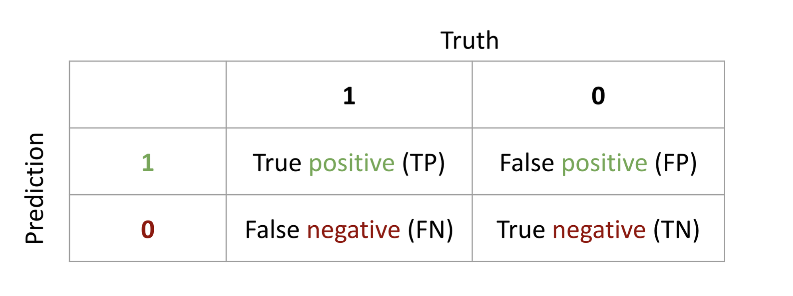

Optimization terminated successfully.
Current function value: 0.511094
Iterations 6
Logit Regression Results
==============================================================================
Dep. Variable: y No. Observations: 6172
Model: Logit Df Residuals: 6162
Method: MLE Df Model: 9
Date: Tue, 26 Aug 2025 Pseudo R-squ.: 0.2563
Time: 17:37:34 Log-Likelihood: -3154.5
converged: True LL-Null: -4241.7
Covariance Type: nonrobust LLR p-value: 0.000
===============================================================================================
coef std err z P>|z| [0.025 0.975]
-----------------------------------------------------------------------------------------------
const -0.7715 0.083 -9.333 0.000 -0.934 -0.609
priors_count 0.3013 0.011 27.374 0.000 0.280 0.323
gender_factor_Male -0.1436 0.078 -1.840 0.066 -0.297 0.009
age_factor_Greater than 45 -1.4504 0.099 -14.688 0.000 -1.644 -1.257
age_factor_Less than 25 1.4264 0.074 19.212 0.000 1.281 1.572
race_factor_Asian -0.8241 0.479 -1.722 0.085 -1.762 0.114
race_factor_Caucasian -0.4884 0.068 -7.140 0.000 -0.622 -0.354
race_factor_Hispanic -0.9369 0.122 -7.709 0.000 -1.175 -0.699
race_factor_Native American 0.7205 0.740 0.974 0.330 -0.730 2.171
race_factor_Other -1.3096 0.156 -8.370 0.000 -1.616 -1.003
===============================================================================================PSTAT 188: Introduction to Ethics in Data Science
Mike Ludkovski (based on materials by Alex Franks & Netasha Pizano)
Overview of this week
- Defining ethics
- Ethical issues related to computers and data
- Case study: COMPAS recidivism
- Case study: Swain’s Jury
- Case study: UCB Admissions
Defining Ethics
“The subject matter of ethics is supplied by two intimately related terms, right and good” (Sharp 1928). ` - Definition: - The judgment upon actions which are categorized as right or wrong - The societal use of terms good and bad - Ethics derived from the Greek word ethos - spirit of the community. - Ethicists try to answer “What actions are regarded as right or wrong by the members of it’s society?”
Establishment of Ethics in Science
- The study of ethics dates back to work of Socrates, Plato, and Aristotle
- Hippocratic Oath
- Established several medical principles that are still significant today, including consent.
- Hippocratic Oath
- Ethics in experimental science was a global concern after WWII
- Nuremberg Code (1947)
- A set of ethical research principles for human experimentation as a result of the Nazi Nuremberg trials.
- Nuremberg Code (1947)
Advancements in computer and data communications technology have resulted in the need to reevaluate the application of ethical principles.
- quote from (Weiss 1990) “The XXII self-assessment: The ethics of computing”
Ethical Issues Related to Computers and Data
Many of the daily work-related responsibilities of data scientists rely on making an ethical choice
Data privacy legislation differs across jurisdictions.
Data privacy in the California Consumer Protection Act is the protection of personal information (e.g., Name, email address, purchase and browsing history, location and employment data, IP address, sensitive personal information)
- Social justice in data science includes practices that promote equity and fairness, focusing on ensuring that data and reports accurately and adequately represent populations. Practicing reflexivity is especially important to identify personal bias while performing data science tasks.
- Transparency relates to communicating with customers about data collection (design, amount, and duration of storage) and the ease with which other data scientists can access collected information. Transparency related to data is especially important for building trust with customers and other data practitioners.
- Consent is an agreement before data collection that lists a participant’s rights to information about a research study or organization’s information collection. Participants can terminate their participation and opt out of data use at any time. Changes to informed consent have made it easier for companies to obtain broad consent, which does not require re-consent for the re-use of data (Froomkin 2019) .
- Accuracy relates to the characteristics of high-quality data, which are highly complete, valid, and consistent.
- Accountability relates to a data scientist’s quality of work, which delineates decisions and processes to create reproducible work that follows company guidelines and adheres to laws.
Ethical Issues Related to Computers and Data: Example
Uber was fined millions by the Netherlands government after a watchdog found that the U.S. company was transferring data about drivers from the Netherlands to the U.S.
Target was sued after a father was able to determine that his daughter was pregnant. A predictive algorithm determined that she was likely pregnant given the items she purchased and sent coupons for expecting mothers.
Greater public access to computers raised ethical concerns (Weiss 1990):
- Ownership of assets/material (e.g., programs, code, visual material)
- The degree that programs, software, and computer users are held responsible for outcomes
Legal Frameworks which Regulate Data Science
- There is variation across jurisdictions in the laws relating to privacy protection and permissible data usage.
- Two common themes in the EU and US legislation which are fundamental to data protection :
- Anti-discrimination rights
- Personal data protection rights
Legal Frameworks which Regulate Data Science
- Anti-discrimination Rights in the U.S.
- The Civil Rights Act of 1964 prohibits discrimination based on color, race, sex, religion, or nationality,
- The Disabilities Act of 1990 prohibits discrimination based on disability
- Personal data protection in the U.S.
- In the United States, the Fair Information Practice Principles (1973) delineate principles that agencies use when evaluating information systems, processes, programs, and activities that affect individual privacy
- Since 2017, an increase in proposed laws and regulations related to AI have been proposed
- The US’s Blueprint for an AI Bill of Rights
Data Ethics Principles
- To provide broad guidance,various organizations (e.g., ASA, (American Statistical Association 2022)) and government agencies have proposed numerous data ethics principles.
- These principles vary in number, scope, and practicality
- Different corporations may chose to uphold the principles that meet and fit the company’s culture due to the lack of federal legislation
Data Ethics Principles (OECD)
- The Organization for Economics Co-operation and Development’s (OECD) (OECD 2002) guidelines in the Protection of Privacy and Trans border Flows of Personal Data are one of the most supported set of principles by U.S. government agencies.
- Collection Limitation Principle
- Data Quality Principle
- Purpose Specification Principle
- Use Limitation Principle
- Security Safeguards Principle
- Openness Principle
- Individual Participation Principle
- Accountability principles
Data Ethics Principles (OECD)
Collection Limitation Principle: There should be limits to the collection of personal data and any such data should be obtained by lawful and fair means and, where appropriate, with the knowledge or consent of the data subject.
Data Quality Principle: Personal data should be relevant to the purposes for which they are to be used, and, to the extent necessary for those purposes, should be accurate, complete and kept up-to-date.
Purpose Specification Principle: The purposes for which personal data are collected should be specified no later than at the time of data collection and the subsequent use limited to the fulfillment of those purposes or such others as are not incompatible with those purposes and as are specified on each occasion of change of purpose.
Data Ethics Principles (OECD)
- Personal data should not be disclosed, made available or otherwise used for purposes other than those specified in accordance with Principle 3, except:
with the consent of the data subject; or
by the authority of law.
- Security Safeguards Principle: Personal data should be protected by reasonable security safeguards against such risks as loss or unauthorized access, destruction, use, modification or disclosure of data.
Data Ethics Principles (OECD)
Openness Principle: There should be a general policy of openness about developments, practices and policies with respect to personal data. Means should be readily available of establishing the existence and nature of personal data, and the main purposes of their use, as well as the identity and usual residence of the data controller.
Individual Participation Principle: An individual should have the right to obtain from a data controller, or otherwise, confirmation of whether or not the data controller has data relating to them; and to have communicated them that data relating to them.
Accountability Principle: A data controller should be accountable for complying with measures which give effect to the principles stated above.
Group Discussion
How does data science play a role in this example? What dilemmas must data scientists consider?
Discussion (4 minutes)
In 2017, Meta announced that they analyze and flag user-generated content related to suicidal intent or risk (e.g., post and comments). Later, Meta announced that the company used the suicide predictions to notify local authorities and that over 100 wellness checks were conducted by law-enforcement. Meta also announced that the suicide detection program would expand across all other countries. In 2018, Meta revealed that they also scan the content of users’ private messages for suicide risk.
Ethical Practices and Considerations
To meet data ethic principles and engage in socially-just data science, practitioners (e.g. data scientists, researchers) can practice the following:
- Remain honest about level of competence related skill, content/subject, potential bias, and timeliness.
- Understand responsibilities to ensure their skills can address the stakeholders (i.e., clients and participants) needs.
- Communicate the limitations of the research design and analytic approach.
- When reporting your findings, clearly convey steps, logic, and findings so that other data practitioners and the public understand.
- Engage in data science practices processes that protect humans and animals and minimize harmful impact
- Acknowledge the work of other data practitioners and researchers that were used.
- Address ethical misconduct by reporting to appropriate authority, which will investigate ethical issues and or violations.
Ethical Practices and Considerations
Algorithms affect the lives of individuals, sometimes in profound ways
Question
What are example of algorithms that you’ve encountered in your life which have influenced your life or your behavior?
Question
What are the ethical practices and considerations that you think the creator of algorithm(s) did or did not take into account?
Case Study: Criminal Risk Assessment
Machine learning is increasingly used to to inform decisions about individuals in the criminal justice system
- Setting bond amounts
- Length of sentence
One major component of these decisions is trying to evaluate a defendant’s risk of future crime
Recidivism: the tendency of a convicted criminal to re-offend.
In 2016, ProPublica published an a story about one of the most used algorithms called ‘COMPAS’
COMPAS stands for Correctional Offender Management Profiling for Alternative Sanctions, and was mostly used to assess the risk of a pretrial release
In their article, they conducted a rigorous analysis of possible bias by analyzing data and COMPAS predictions from more than 10,000 criminal defendants in Broward County, Florida
Fairness & Transparency
Fairness: ideally, COMPAS would have the same impact on all demographic subgroups. Probably not possible!
Transparency: COMPAS is a closed-source algorithm. The public is not allowed to see how the algorithm works.
Question
What information about an individual do you think is “fair” to include in an algorithm which predicts recidivism? What information would be “unfair”?
COMPAS data
The risk-scores are derived come from answers to a 137 question survey and the defendants criminal record.
Predictors used by COMPAS include:
Prior arrests and convictions (and if any friends had priors)
Address, GPA, wealth
If the defendant’s parents separated
Important
Purportedly, race is not used as a predictor.
Recidivism Data
There are 6172 observations in the data we’ll analyze. 44.6% of individuals received a high risk score.
Predictions
The COMPAS algorithm is closed-source but we can learn about the algorithm by fitting our own model to the COMPAS predictions.
Predict COMPAS score (“high” vs “low” risk) using data about the defendants collected by ProPublica.
Data includes age, race, and prior counts
Compare the predictions for different inputs to the model
Predictions
Note
The classifier we used here is called a “logistic regression”. You’ll learn much more about this in later statistics courses like PSTAT 127.
Exploring Predictions
Use our classifier to predict the probability that COMPAS would give an individual a high score
Looks at inputs which are identical except in one characteristic
Compare predictions for different ages and different races
The importance of age
Compare predictions for two hypothetical individuals identical in all characteristics except age.
| Loading ITables v2.4.4 from the internet... (need help?) |
The importance of race
Compare predictions for two hypothetical individuals identical in all characteristics except race.
| Loading ITables v2.4.4 from the internet... (need help?) |
Important
But “race” is purportedly not an input to COMPAS!
Proxy Variables
Just because race isn’t an input to the algorithm does not mean the algorithm makes the same predictions for all race groups!
Question
How might the COMPAS algorithm implicitly factor racial information into its predictions even though race is not an input?
Evaluating Mis-classifications

- Accuracy: TP + FP / n
- False positive rate (FPR): FP / (FP + TN)
- False negative rate (FNR): FN / (FN + TP)
Examining FPR and FNR
ProPublica provides a binary variable named
two_year_recidwhich indicates whether an individual committed a new crime within two years of the screening or not.We can compare the COMPAS risk predictions to the
two_year_recidvariable which we’ll assume is our “ground truth” to compute FPR and FNRThere is a tradeoff between FPR and FNR!
Examining FPR and FNR
# Create a contingency table
print(pd.crosstab(compas_scores['score_factor'], compas_scores['two_year_recid']))two_year_recid 0 1
score_factor
HighScore 1018 1733
LowScore 2345 1076- FPR: \(1018 / (2345 + 1018) = 0.30\)
- FNR: \(1076 / (1733+1076) = 0.38\)
- Accuracy: \((2345 + 1733) / n = 0.66\)
Question
What is the meaning of FPR and FNR in this context? Is one worse than the other?
FPR and FNR for African-Americans
# Filter the data for African-American race
filtered_data = compas_scores[compas_scores['race'] == 'African-American']
# Create a contingency table for score_factor and two_year_recid
print(pd.crosstab(filtered_data['score_factor'], filtered_data['two_year_recid']))two_year_recid 0 1
score_factor
HighScore 641 1188
LowScore 873 473FPR = \(641 / (873 + 641) = 0.57\)
FNR = \(473 / (473 + 1188) = 0.28\)
ACC = \((999+414)/(999+408+414+282) = 0.65\)
FPR and FNR for Caucasians
# Filter the data for Caucasian race
filtered_data = compas_scores[compas_scores['race'] == 'Caucasian']
print(pd.crosstab(filtered_data['score_factor'], filtered_data['two_year_recid']))two_year_recid 0 1
score_factor
HighScore 282 414
LowScore 999 408FPR = \(282 / (282 + 999) = 0.22\)
FNR = \(408 / (408 + 414) = 0.50\)
ACC = \((999+414)/(999+408+414+282) = 0.67\)
FPR and FNR
| Loading ITables v2.4.4 from the internet... (need help?) |
Similar accuracy across the two race groups are attained in very different ways!
Putting a human face on it
ProPublica discusses two different incidents in Broward County:
In 2014, an 18-year-old girl, Brisha Borden, and her friend grabbed an unlocked bicycle and scooter and rode them down the street, then abandoning it. Police arrived and arrested the girls for burglary and theft of $80 worth of goods.
In 2013, a 41-year-old man, Vernon Prater, was caught shoplifting $86 worth of goods from Home Depot. He had prior convictions for armed robbery and had previously served 5 years in prison.
Putting a human face on it
Putting a human face on it
Summary
We have highlighted unfairness in the COMPAS algorithm
Understanding the root causes and devising potential solutions is non-trivial. There are often unintended consequences that data scientists must grapple with.
Ethical data science and fairness in machine learning is challenging but essential!
Read more
Case study: Swain’s Jury Panel
Swain’s Jury Panel
The following case study highlights the ethical importance and implications surrounding sampling. This case study and discussion is an extension of Data8’s example.
In 1962, Robert Swain was charged and convicted with committing a crime in Alabama’s Talladega County, which had the possibility of a death sentence.
Prior to his trial and after his conviction, his lawyers argued that Black citizens of Talladega were systematically excluded from grand juries such as Swain’s case (Carrington 2023), which violated the U.S. Constitution to an impartial jury.
Note, only men 21 years and older were allowed to serve as jury members at the time.
Jurors are selected from a jury panel of 100 citizens who should be representative of a regions population.
Jury Panel demographics
During Swain’s trial, 26% of males in Talladega County were Black, however the jury panel consisted of 8 Black males, in other words Black males made up 8% of the jury panel. None actually served on the final jury.
Swain’s lawyers appealed his conviction arguing that he was not given an opportunity to fair trail due lack of representation of Black males on the jury panel.
His appeal went all the way up to the Supreme Court, who decided that the percent difference was small and that there was no attempt by the State of Alabama to exclude Black citizens.
Using simulation, we can evaluate the number of Black citizens in jury panels if they were randomly selected from a population that consisted of 26% Black and 74% White males. We can also evaluate a distribution in which 8% of the population, on average, were Black males.
Jury Pool
The statistic of interest in these simulations is the count of Black males if randomly selected from a population similar to Talladega County and a population with an 8% Black male proportion. Each randomly selected sample consisted of 100 individuals, representing the number of citizens on a jury panel. There were 10,000 iterations of random selection.

Jury Pool distribution
Consider the following hypothetical scenario.
What if the panel of jurors consisted of 15 Black males?
Would the count of Black panelist lead to fair panel or impartial jury?
Would you consider a panel of 21 Black males fair?
Take 4 minutes to discuss.

Discussion:
What are some advantages of random sampling in this context? How might random sampling promote ethical practices?
Note how random sampling only leads to racial balance on average and how chance variability can lead to imbalance.
How many black males need to be on the panel for you to be convinced that the sampling process was followed fairly? Such gray areas motivate notions of significance.
Is random sampling the fairest way to select the panel? There are alternatives such as using conditional random sampling to explicitly balance along certain demographic characteristics.
Sampling Bias
What is sampling bias?
The outcome of a sampling technique that suggests that not every member of the population has an equal opportunity of being in a sample.
Consequently, statistical bias in estimates may be observed. In other words, estimates cannot be trusted as reflecting or representing the population.
Not investigating and addressing sampling issues raises ethical concerns.
Sampling and Representativeness
After using a sampling mechanism, it is important to determine how well the sample represents the population (Kotu and Deshpande 2019).
Typically, using a random sampling approach lessens the chance of omitting or over-sampling groups that make up the population of interest.
The law of large numbers suggests that the larger the random sample the more likely sample will represent the population of interest compared to sampling a small number of individuals (Dinov, Christou, and Gould 2009).
Sampling frame and sample size matters! Ensure that the sampling frame is representative of population and that the final sample is characteristically similar to the population, even in the presence of a large sample (Sauro and Lewis 2012).
Observational Studies
Based on observing people or other units in an environment in which behaviors naturally occur
In general, data scientists should pay special attention to observations recruitment, study procedures, and survey/assessment selection.
Since observational studies are not true experiments, researchers and data scientists can expect bias in samples and lower confidence in analytic findings along with other limitations (Jhangiani, Cuttler, Leighton, 2019).
Ethical practices that data scientists can engage while working with data from observational studies include: - Communicating with stakeholders that findings are not absolute truths. - Educating readers that correlation does not equal causation - Use statistical techniques, such as weights or conservative statistics, to deal with unequal representation and analytical confidence.
III: UC Berkeley Graduate Admissions
Famous study from 1970s:

Possible explanations
Discrepancy in admissions rates is caused by:
- Random chance (sampling variability)
- Female applicants were less qualified than male applicants
- UC Berkeley was biased against women
- Confounding or lurker variables (the real explanation, described in the following slides)
This example can also fit into the storytelling and visualization module to highlight the number of different possible explanations for the same (limited) set of data.
UC Berkeley Graduate Admissions

Berkeley Gender Discrimination

Takeaway: Women tended to apply to departments that had much lower acceptance rate. There was no major gender differences, once accounting for departmental preference.
Simpson’s Paradox
Simpson’s Paradox is a statistical phenomenon in which a trend that appears across multiple subgroups tends to reverse or disappear when the groups are combined.
Correlations between variables can exist for many different reasons. Sometimes correlation is due to some kind of causation, but often there is a simple explanation related to confounding variables or selection effects. Stratifying according to confounding variables can make associations disappear.
Randomized control trials balance balance confounders (e.g. departmental preference) across groups, but aren’t always ethically feasible.
Simpson’s paradox highlights one way in which statistics (from observational data) can be misused or misinterpreted.
Summary
- Ethical benefits and barriers in running randomized experiments:
- Pro: Results will reflect the population (on average)
- Challenges: Ethics of assigning treatments
- What are the ethical concerns associated with “natural experiments”?
- Data collection & privacy concerns
- Dangers in drawing conclusions with reasoning over relevant confounders. May not know what confounders to include. Expertise needed to reason about results carefully.
- Can increase prevalence of misinformation or misleading conclusions if not reported carefully.
References
American Statistical Association. 2022. “Ethical Guidelines for Statistical Practice.”
Carrington, Tucker. 2023. “Annual Review of Criminal Procedure.” The Georgetown Law Journal 52.
Dinov, Ivo D., Nicolas Christou, and Robert Gould. 2009. “Law of Large Numbers: The Theory, Applications and Technology-Based Education.” Journal of Statistics Education 17 (1): 1. https://doi.org/10.1080/10691898.2009.11889499.
Froomkin, A Michael. 2019. “Big Data: Destroyer of Informed Consent.” BIG DATA.
Kotu, Vijay, and Bala Deshpande. 2019. “Data Science Process.” In, 19–37. Elsevier. https://doi.org/10.1016/B978-0-12-814761-0.00002-2.
OECD. 2002. OECD Guidelines on the Protection of Privacy and Transborder Flows of Personal Data. OECD. https://doi.org/10.1787/9789264196391-en.
Sauro, Jeff, and James R. Lewis. 2012. Quantifying the User Experience: Practical Statistics for User Research. Chantilly, UNITED STATES: Elsevier Science & Technology. http://ebookcentral.proquest.com/lib/ucsb-ebooks/detail.action?docID=872581.
Sharp, Frank C. 1928. “The Problem of Ethics.” In, 3–20. The Century Philosophy Series. New York, NY: The Century Co.
Weiss, Eric A. 1990. “The XXII Self-Assessment: The Ethics of Computing.” Communications of the ACM 33 (11): 110–32. https://doi.org/10.1145/92755.92780.